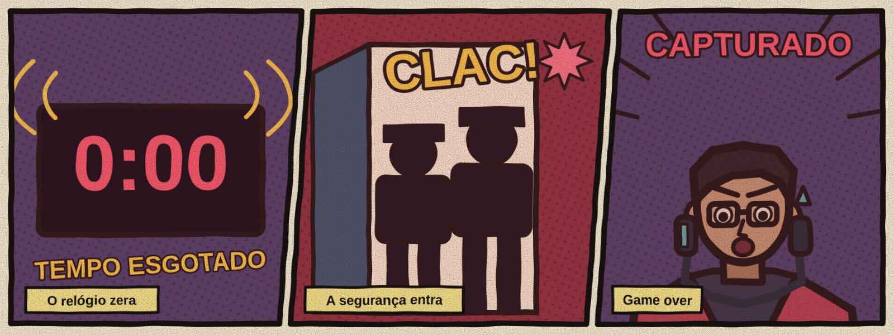

Finais
O jogo tem 4 desfechos. Sem a descoberta especial, escapar leva a um dos dois finais de fuga, conforme o tempo e as falhas. Deixar a contagem chegar a zero leva à captura. O quarto desfecho exige investigar além do caminho principal e conseguir sair. Quais deles você consegue ver?
Condições
| Final | Como alcançar | Dificuldade |
|---|---|---|
| Fuga Perfeita | Abrir a fechadura com pelo menos 2 minutos restantes e no máximo 1 erro. | Alta |
| Fuga com Sequelas | Abrir a fechadura com menos de 2 minutos restantes ou mais de 1 erro. | Média |
| Capturado | Deixar o tempo chegar a zero. | Baixa |
| Secreto | ??? | Muito alta |
Os finais em quadrinhos



Final Secreto: ??? FIM
Resumos
- Fuga Perfeita: você sai antes do alarme geral e a segurança encontra o corredor vazio.
- Fuga com Sequelas: você escapa com pouca margem ou várias falhas, e os registros identificam sua passagem.
- Capturado: a segurança assume a ala, interrompe sua investigação e exige esclarecimentos.
- Secreto: reservado a quem olha onde ninguém olha.
Dica para o final secreto
Nem toda pista está em uma tela ou em um cofre. Examine o que costuma ser descartado e recolha o que encontrar. Ainda será preciso reprogramar a saída antes do fim da contagem.